About
Hello! I'm Oishani Bandopadhyay, currently a graduate student in the Computational Social Science MS Program at UCSD.
As an undergraduate at UCSD, I double-majored in Cognitive Science with a Specialization in Machine Learning and
Neural Computation, and Linguistics. I'm interested in the intersections of language, technology, and perception,
through computational linguistics, natural language processing, and applications of machine learning and data science
to speech and text.
I find using computational methods to quantify biases in language technology and understand variation in speakers
really exciting. How LLMs and speech recognition systems vary in their responses across differences in gender,
language background, race, and other factors, and how we can build more equitable systems to counter these biases,
are questions I'm frequently thinking about.
Through research, internships, and projects, I've worked with machine learning models, data science methods, and
agentic systems. I'm always building up my technical skills to be able to answer interesting, impactful questions.
My interdisciplinary background encourages me to approach problems from unique angles, and never stop learning.
Research Interests
I've worked in many interdisciplinary settings, and have always enjoyed using computational methods and language data.
My CV lists my experiences and current work in more detail.
Natural Language Processing: work with ASR (Automatic Speech Recognition), LLMs, and AI solutions using speech processing, language modeling, and deep learning methods
Computational Linguistics: applying computational methods to answer questions in linguistics, using spectrograms, forced alignment, and statistical modeling
Cognition and Behavioral Research: using behavioral research and experimental methods to understand human and machine perceptions of language and their cognitive representations
Sociophonetics and Variation: how dialectal variation is observed and represented phonetically, Indian English dialects, Indian languages, and variation in speech of multilingual speakers
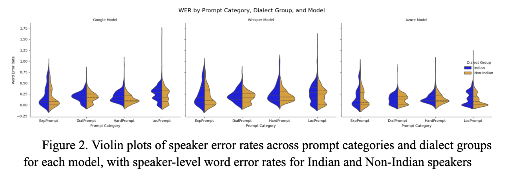
Honors Thesis
For my undergraduate Honors Thesis, I designed a research experiment to evaluate accuracy differences in ASR (Automatic Speech Recognition)
systems using WER (Word Error Rates) for Indian and non-Indian dialects of English. Below is the link to view it on github.
Honors Thesis
·
GitHub Repo
You can also download and view the complete paper here:
Download Oishani's Honors Thesis
Projects
Here are some interesting projects I've worked on. You can scroll through them, and visit the repositories for the code and reports. If you have any thoughts or feedback, I'd love to hear it!
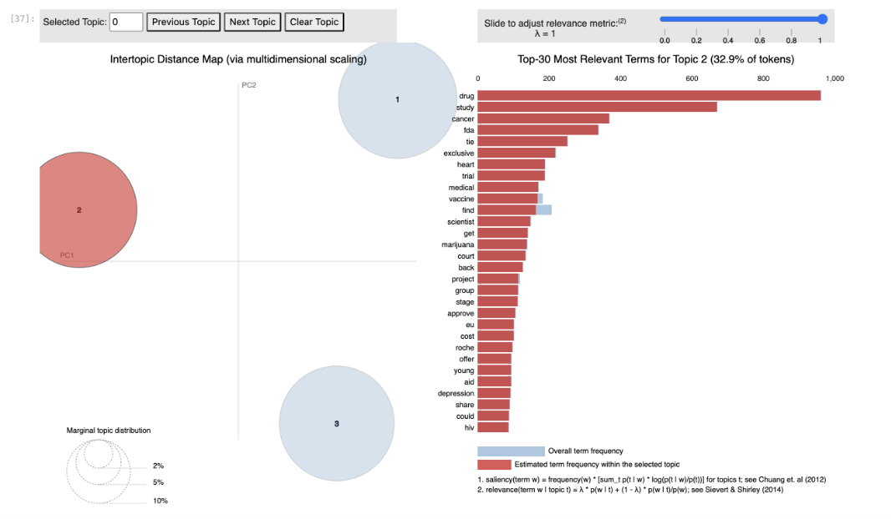
Topic Modeling on Health News Tweets with Latent Dirichlet Allocation
Investigating LDA on short, specific health news text data and subsets of women's, men's and children's health to see differences in salience and frequency of terms across subsets
GitHub Repository
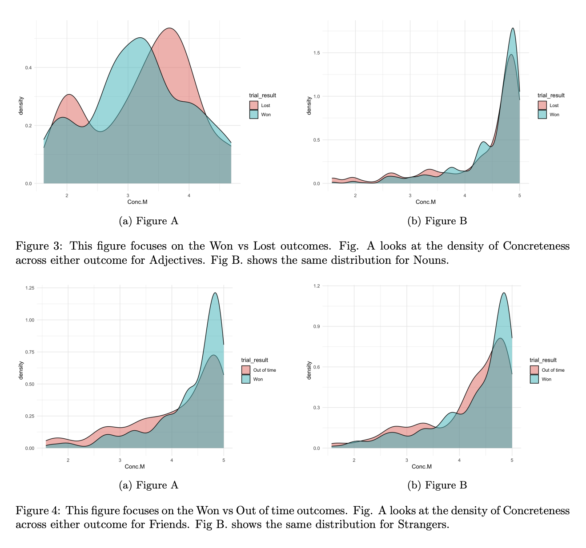
Analyzing Linguistic Variables to Predict Successful Communication
Predicting successful communication outcomes on linguistic properties of expressions using linear regression models and chi-square tests
GitHub Repository
Evaluating LLM Gender Stereotypes Using Surprisal
This project uses surprisal as a metric to evaluate properties of LLMs. By using pairwise gendered words, and calculating surprisal for each pair, the sensitivity to gender stereotypes in GPT-2 is presented
GitHub Repository
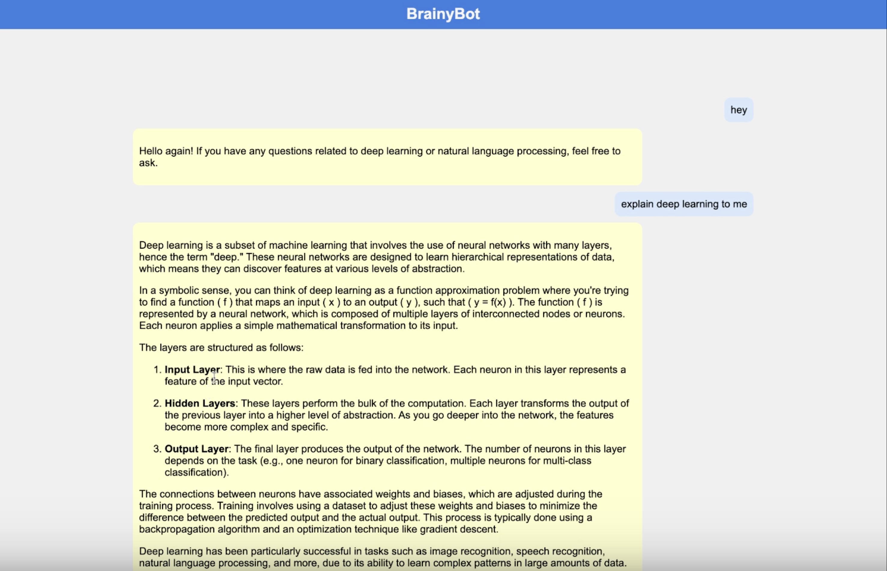
BrainyBot Personalized Learning Tutor for NLP Class
BrainyBot is a personalized AI ChatBot for LIGN 167, a course at UC San Diego in deep learning and natural language processing
GitHub Repository
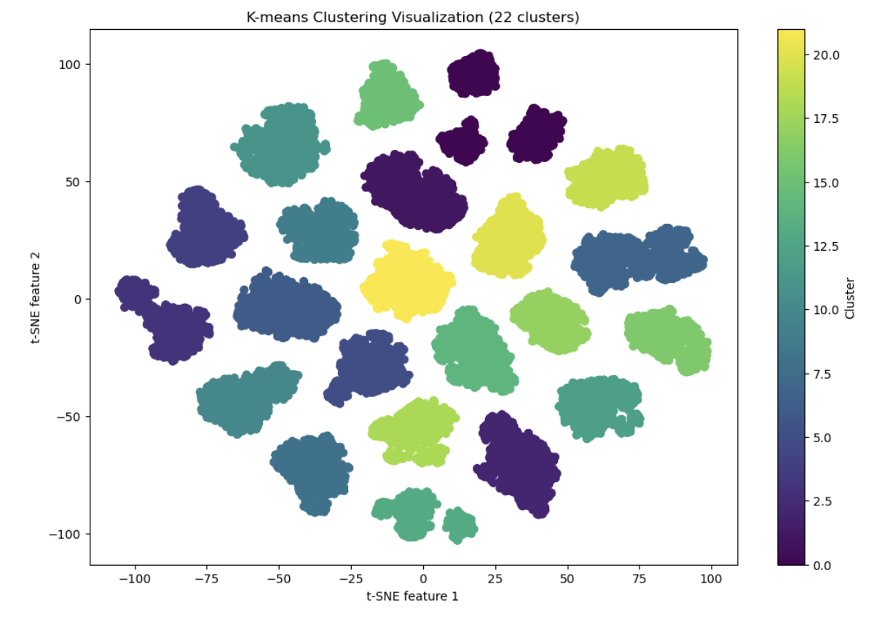
Spotify Recommender System with Clustering and PCA
This project is a Music Recommendation System designed to provide personalized song recommendations based on input criteria.
GitHub Repository
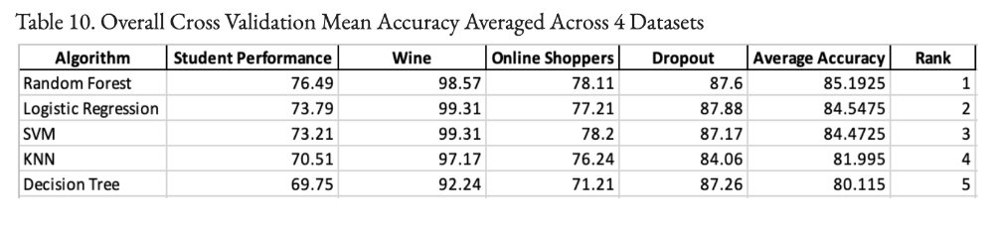
Supervised Classification Model Evaluation Across Datasets
Evaluation of five different classifier algorithms: Logistic Regression, KNN, Random Forest, Decision Tree, and SVM, across 4 datasets, on test accuracy and cross validation mean accuracy
GitHub Repository
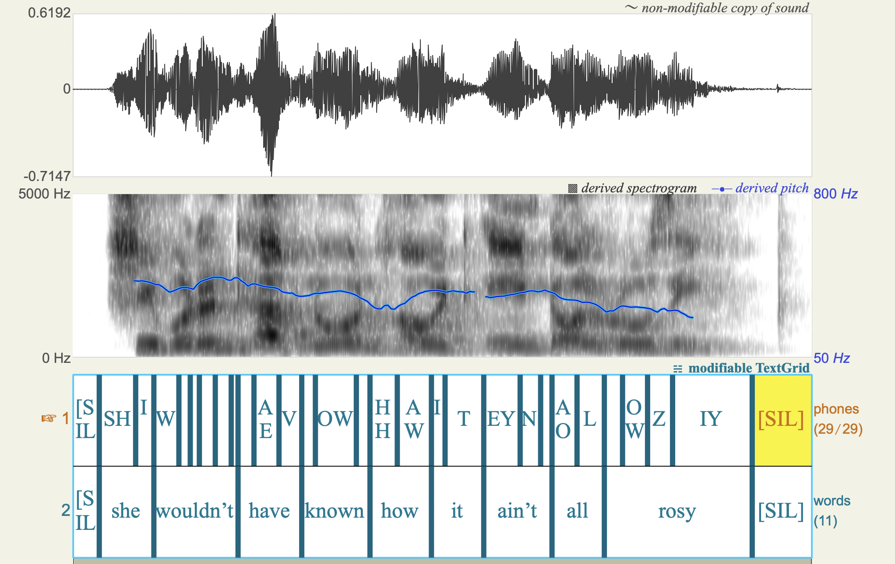
Neural Forced Alignment Applied to Indian Dialectal Speech
Forced Alignment (Charsiu Forced Aligner) Tested on Dialectal English and Code-Switched English
GitHub Repository
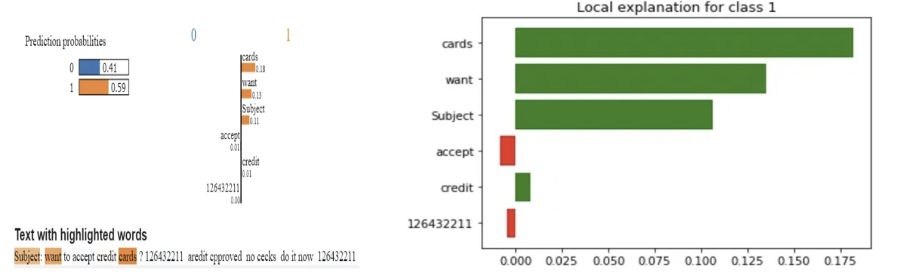
Techniques in Explainable AI (XAI) Presentation
Presentation Project on Explainable AI Techniques such as SHAP and LIME, including industry applications and areas for improvement.
GitHub Repository
Other Interests
I really enjoyed leading student organizations and tutoring as an undergraduate. In my free time, I write poetry, hike, and pet dogs.
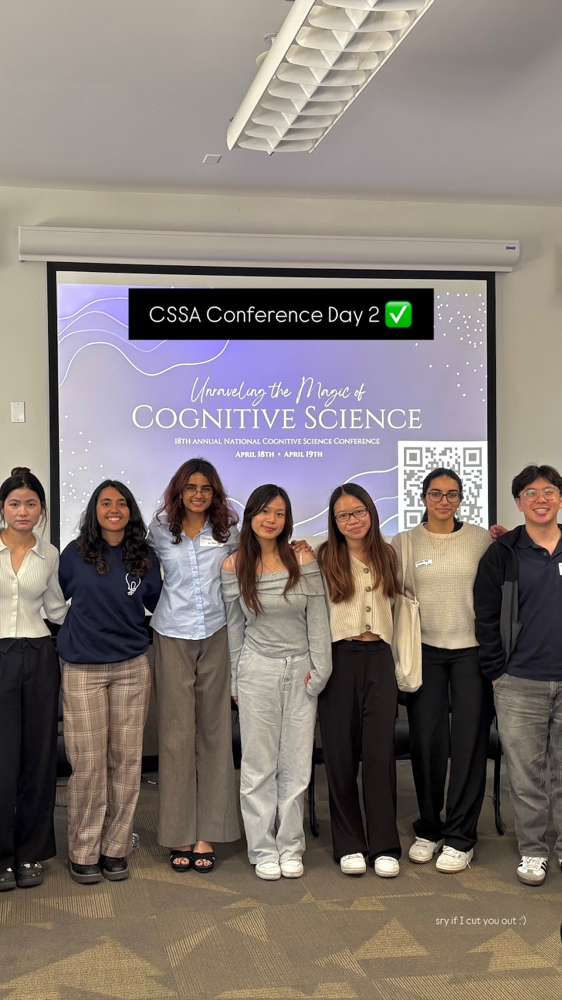

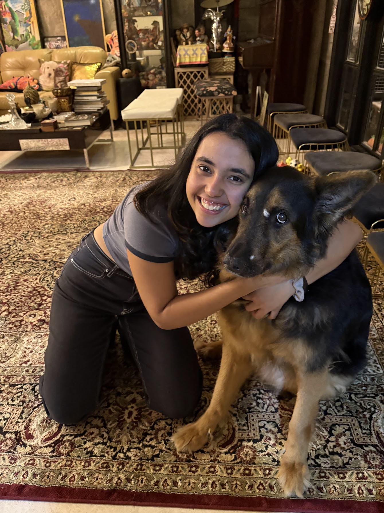
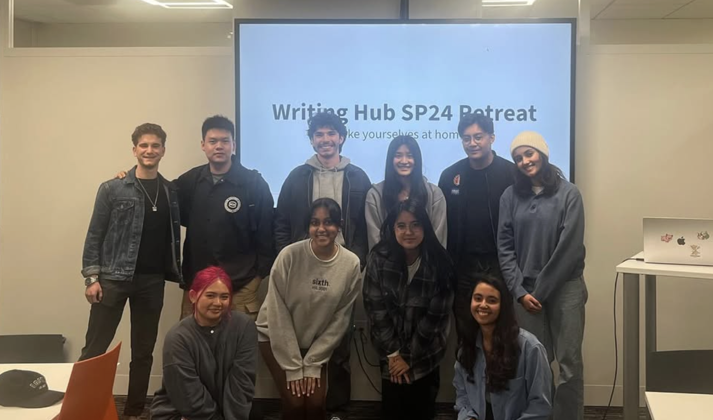